Graphical Causal Models
Today
We will learn about another way to approach causal modeling involving graphs and structural causal models
- Developed by different people initially - Judea Pearl, Peter Spirtes, Clark Glymour
This approach involves using graphical models to represent our beliefs about causal structure
- These graphs might be familiar to some of you as “Bayesian networks" :::
Why Two Approaches?
Different but highly related approaches.
Two different “hats”
Potential Outcomes: Individual observations \(\rightarrow\) individual causal effects \(\rightarrow\) average causal effect
Structural Causal Models: Causal relations and manipulations of variables
Graphical representations of causal structure
Advantage of todays approach: Easier to deal with many different variables and many causal relations at the same time
0.5
0.5
Should we prescribe the drug? app.wooclap.com/CBRFDD
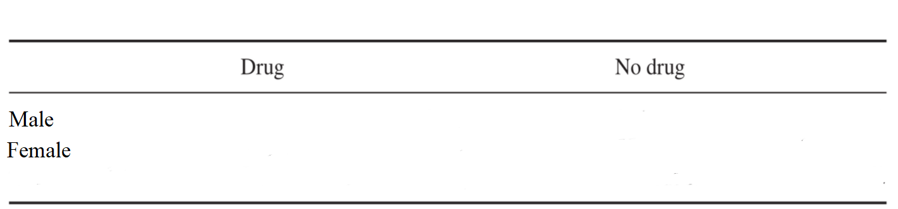
Should we prescribe the drug? app.wooclap.com/CBRFDD
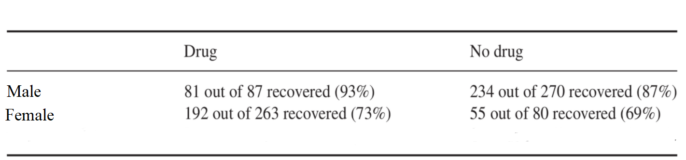
Should we prescribe the drug? app.wooclap.com/CBRFDD
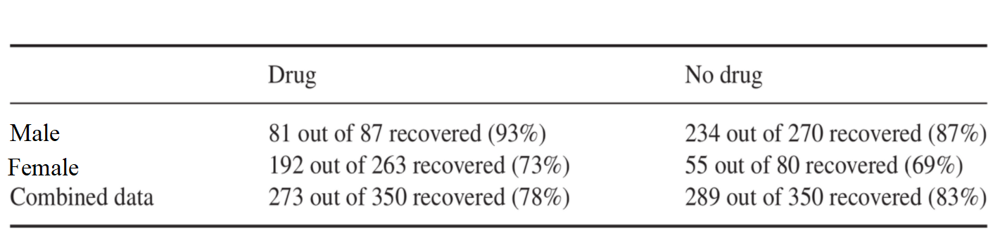
Should we prescribe the drug? app.wooclap.com/CBRFDD
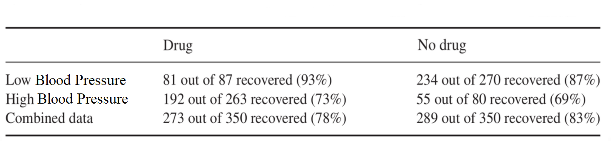
Should we prescribe the drug? app.wooclap.com/CBRFDD
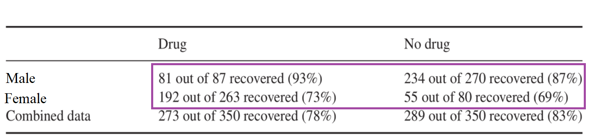
Conditional Probabilities: \[P(R = r | D = d, S = s)\]
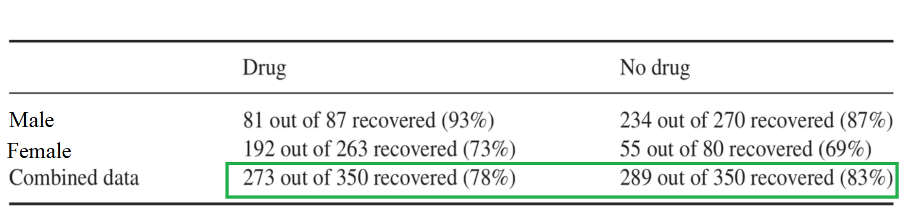
Marginal Probabilities: \[P(R =r | D = d)\]
Simpsons Paradox
Berksons Paradox
Lord’s Paradox
Confusing, but not a paradox
You’re asking a question that statistical inference alone is not equipped to answer
Which statistical information should I use as an estimate of a causal effect?
Causal Graphs
Causal Graphs: Draw Your Assumptions before your Conclusions A causal graph is a diagram representing our beliefs about which variables share causal relations with each other
0.6
The arrow X \(\rightarrow\) Y represents our belief that X is a direct cause of Y
We omit an arrow if expert knowledge tells us that one variable does not directly cause another. The absence of an arrow is a strong statement
0.4
Graph known as a Directed Acyclic Graph (DAG) or Bayesian Network
Causal Graphs and Structural Causal Models
We can formalize the idea that the arrows in the DAG represent our beliefs about causal relations by saying that the DAG visualizes a Structural Causal Model (SCM)
An SCM is a set of equations describing causal relations between variables, which are also influenced by independent noise terms \(N\) (typically not drawn in the graph).
We can denote an SCM using the notation \(Y := f(X, N)\)
- read as: the variable \(Y\) is assigned a value determined by some function (\(f\)) of the variable \(X\), as well as some random component (noise) \(N\).
Causal Graphs and Structural Causal Models
0.5 \[\begin{aligned} Z &:= f_z(N_z) \\ X &:= f_x(Z, N_x) \\ Y &:= f_y(X, Z, N_y) \end{aligned}\] where
\(N_i\) are jointly independent
\(f\) represents potentially any function - any type of functional form, and variables can have any distribution
0.5
Causal Graphs and Structural Causal Models
The SCM is in principle non-parametric (also known as non-parametric SEMs).
In practice it is sometimes necessary to assume something about a) the distribution of the variables involved, and b) the functional form of the causal relationships.
This introduces extra non-causal assumptions which are not represented by the DAG
But it often makes our life (i.e. analyses) easier
For convenience only, many examples we will use today will assume linear relations and Gaussian distributions for the error
Causal Graphs and Structural Causal Models
0.5 \[\begin{aligned} Z &:= \epsilon_Z \\ X &:= 2Z + \epsilon_X \\ Y &:= 1X + 2Z + \epsilon_Y \end{aligned}\] where
- \(\epsilon_X, \epsilon_Z, \epsilon_Y\) are iid, \(\sim\mathcal{N}(0,1)\)
0.5
Causal Effects in SCMs In the SCM framework, a causal effect is defined with respect to an intervention on a variable.
The do-operator \(do(X=x)\) represents a “surgical intervention” to set the value of the variable \(X\) to a constant value \(x\)
- Let \(X\) represent aspirin-taking. Then read \(do(X=x)\) as the act of intervening such that everyone takes an aspirin.
In the graph, a \(do-\) operation on \(X\) cuts-off all incoming ties
Intervening makes \(X\) independent of other causes
Note: this is not yet a causal effect, but something we need to define a causal effect
Causal Effects in SCMs
0.5
0.5 when we intervene \(do(X = x)\) our SCM becomes \[\begin{aligned} Z &:= \epsilon_Z \\ \textcolor{orange}{X} &\textcolor{orange}{:= x} \\ Y &:= 1X + 2Z + \epsilon_Y \end{aligned}\] where
- \(\epsilon_Z, \epsilon_Y\) are iid, \(\sim\mathcal{N}(0,1)\)
Causal Effects in SCMs Often interested in the causal effect of a do- intervention on the mean of another variable
Average causal effect:
\(ACE = E[Y \mid do(X = 1)] - E[Y \mid do(X = 0)]\)
- Read as: The difference in the average value of \(Y\) given the setting where everyone is forced to take aspirin vs the setting where everyone is forced to not take aspirin
If we only observe the system, i.e., we only “see" the system, the relationship between \(X\) and \(Y\) may not be the same as the”do" relationship
Observing \(\neq\) Intervening:
\(E[Y \mid X=x]\) is not generally the same as \(E[Y \mid do(X=x)]\)
Two versions of the causal system
0.5 Observing
0.5 Intervening
SCMs and Causal Inference DAGs are useful because they tell us a) when and why observing \(\neq\) intervening, and b) how we should estimate causal effects like the ACE!
Let’s say we have observational data. This allows us to learn statistical dependencies in the observational setting
- “Seeing" relationships
But we want to use observational data to obtain dependencies in the intervention setting (i.e., we want to estimate a causal effect)
- We want to learn/estimate “doing" relationships
The structure of the DAG tells us how to do this!
DAG Rules
3 fundamental graphical structures
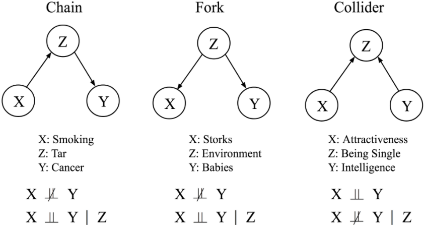
Chains
0.6 Chains transmit causal associations
\(X\) changes \(Z\) which in turn changes \(Y\)
aka mediation
Conditioning on \(Z\) (i.e. controlling for \(Z\)) blocks transmission of causal information
0.4
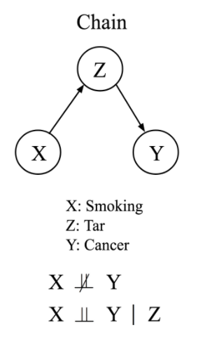
Forks
0.6 Forks transmit non-causal (statistical) information
\(Z\) causes \(X\) and \(Y\), which makes \(X\) and \(Y\) statistically dependent
But intervening on \(X\) doesn’t change \(Y\)
aka confounding or common-cause variables
This is known as a backdoor path
Conditioning on \(Z\) (i.e. controlling for \(Z\)) blocks transmission of non-causal information
0.4
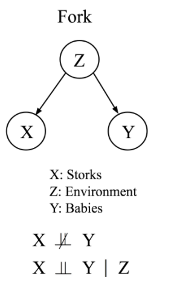
Colliders
0.6 Colliders do not transmit any information
\(X\) and \(Y\) are uncorrelated, but both cause \(Z\)
aka a common effect
But, conditioning on \(Z\) introduces a non-causal (spurious) association between \(X\) and \(Y\)
This is known as collider bias
Implication: Estimating a causal effect by controlling for everything is a terrible idea
0.4
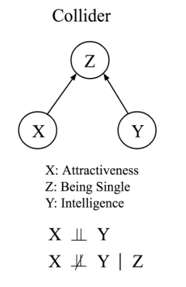
Collider Bias
Collider Bias
Causal Effects according to the DAG
In a nutshell: To estimate the causal effect of \(X\) on \(Y\) we
block backdoor paths by conditioning on confounders
- This stops the transmission of non-causal (statistical) information between \(X\) and \(Y\)
avoid conditioning on any colliders
- Conditioning on a collider induces a non-causal statistical association between \(X\) and \(Y\)
avoid conditioning on any mediators
conditioning on a mediator blocks an interesting causal pathway
Note: Today, and unless otherwise specified, the causal effects we are interested in are “total effects”
We want to estimate the causal effect of Aspirin (X) on Headache Recovery (Y). We have also measured the variable Sex assigned at Birth (Z)
Example: Aspirin and Headaches
0.6 Causal Estimand:
\(ACE = E[Y \mid do(X = 1)] - E[Y \mid do(X = 0)]\)
Naive Estimate:
\(E[Y | X =1] - E[Y | X = 0]\)
Seeing \(\neq\) Doing: Unblocked backdoor path through Z
Correct Estimate:
EMPTY
0.4
Example: Aspirin and Headaches
0.6 Causal Estimand:
\(ACE = E[Y \mid do(X = 1)] - E[Y \mid do(X = 0)]\)
Naive Estimate:
\(E[Y | X =1] - E[Y | X = 0]\)
Seeing \(\neq\) Doing: Unblocked backdoor through Z
Correct Estimate:
\(E[Y | X =1, Z] - E[Y | X = 0, Z]\)
0.4
Should we prescribe the drug? app.wooclap.com/CBRFDD
0.4
0.4
The question “Should I prescribe the drug or not?” is a question about the Average Causal Effect of \(X\) on \(Y\)
Statistical Information alone cannot provide the answer. But the DAG immediately allows us to answer it!
If the third variable is a common-cause, condition on it.
- Use \(E[Y | X = x, Z]\) to estimate \(E[Y | do(X =x)]\)
If the third variable is a mediator or collider, don’t condition on it!
- Use \(E[Y | X =x]\) to estimate \(E[Y | do(X =x)]\)
DAGs with many variables
d-seperation rules For bigger graphs, statistical (in)dependence is read off using d-seperation rules
A path is a sequence of nodes and edges (of any direction) connecting two nodes
Open Paths \(\Rightarrow\) St. Dependence .…. Blocked Paths \(\Rightarrow\) St. Independence
Chains and forks are open paths. We close them by conditioning on the mediator or common cause
Colliders block paths. But conditioning on a collider opens that path
- Conditioning on an effect (child) of a collider also opens up a path
Valid Adjustment Sets The DAG tells us which variables to condition on, and which variables not to condition on, to estimate a causal effect
Valid Adjustment Set
By drawing bigger DAGs, and including observed and unobserved variables, we can assess if and how the causal effect of interest is identified
Benefits of a DAG approach
Benefits of a DAG approach
Benefits of a DAG approach
Benefits of a DAG approach
Estimating Causal Effects
0.5
0.5 To estimate ACE of Aspirin on Recovery
Condition on Sex only
Not necessary to condition on Dehydration
Conditioning on BP blocks a causal path, and opens a collider path \(A - D \rightarrow R\)
Unobserved confounders should also be included in your DAG to determine if a causal effect is identified
Unobserved Confounders
0.5
0.5 Anti-inflammatory Medicine reduces blood pressure and recovery
- But the ACE is still identified, even without observing this variable
Unobserved Confounders
0.5
0.5
If someone has a History of migraines, this may effect \(A\) and \(R\)
- The ACE is not identified from the observed data in this case
Draw Your Assumptions before your Conclusions We should be both careful and critical we drawing causal graphs
Often our assumptions about the role of unobserved variables is critical
It might be the case that your causal model tells you that a causal effect cannot be estimated given your observed data
D-seperation rules in graphs with many variables can have difficult-to-oversee consequences
We are interested in the \(ACE\) of \(X\) on \(Y\). We observe \(X\), \(Y\) and \(Z\).
Can we estimate the \(ACE\)? If so, how?
We are interested in the \(ACE\) of \(X\) on \(Y\). We observe \(X\), \(Y\) and \(Z\).
Can we estimate the \(ACE\)? If so, how?
We are interested in the \(ACE\) of \(X\) on \(Y\). We observe \(X\), \(Y\) and \(Z\).
Can we estimate the \(ACE\)? If so, how?
Adapted from Elwert and Winship (2014), Figure 13
We are interested in the \(ACE\) of \(X\) on \(Y\). We observe \(X\), \(Y\) and \(Z\).
Can we estimate the \(ACE\)? If so, how?
Adapted from Elwert and Winship (2014), Figure 13
We are interested in the \(ACE\) of \(X\) on \(Y\). We observe \(X\), \(Y\) and \(Z\).
Can we estimate the \(ACE\)? If so, how?
Adapted from Elwert and Winship (2014), Figure 13
Assumptions for Causal Inference using DAGs
Assumptions for Causal Inference I Why is it that the DAG tells us about which variables are statistically dependent on which other variables?
It turns out that, if we assume there is some underlying SCM that the DAG represents, this is always the case.
This is known formally as the “Global Markov Condition”, which links the structure of the graph \(G\) with the joint density of the variables \(P\)
Global Markov Condition: \(P\) is Markov w.r.t \(G\) iff
\(X\) and \(Y\) are d-seperated by \(S\) \(X \mathrel{\text{\scalebox{1.07}{$\perp\mkern-10mu\perp$}}}Y \mid S\)
Reasoning about observations Because of the markov condition(s), the structure of a DAG tells us how we can describe the joint density of \(X\)
Markov Factorization:
The joint density of the variables \(P(X_1, \dots X_n)\) is given by \(\prod_{i=1}^{n}P(X_i \mid \intertext{Parents}(X_i))\)
e.g., \(P(X, Z, Y) = P(Z) P(X \mid Z) P(Y\mid X,Z)\)
Consequence: DAGs & SCMs tell us what statistical dependencies to expect if we collect a random sample of those variables in an observational or an intervention setting.
Assumptions for Causal Inference II We define a causal effect using the do-operator, but this also comes with assumptions
do-operator:
Modularity and Localized Interventions:
We can change \(p(X)\) without changing \(p(Z \mid X)\)
Forcing someone to take aspirin has the same effect on headaches as if they chose to take aspirin
We can change one cause-effect mechanism without changing the others
Discussion
Benefits of DAGs: Conceptual Clarity Drawing DAGs gives you practical guidelines about when causal inferences can be made, what variables to control for, and what variables not to control for
Transparent way of representing your/expert beliefs about the causal system at hand
These beliefs guide statistical analyses in a straightforward way
Emphasis here on identification rather than estimation: You still need to choose how to condition on variables! Things can still go wrong in this step.
Many controversial and seemingly difficult problems are made easy by drawing DAGs
Simpsons Paradox
Simpsons Paradox
Example (Pearl, Glymour & Jewell, 2016):
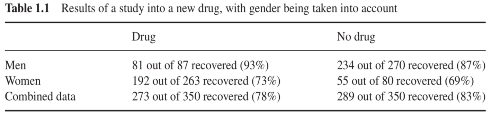
Simpsons Paradox
0.6
Estrogen levels negatively affect recovery
Women are more likely to take the drug than men
We should condition on Sex - it blocks a backdoor path!
0.4
Simpsons Paradox
0.6 Suppose that we measure post-treatment blood pressure (B) instead
Statistical information is exactly the same
B cannot cause drug taking
The drug works in part by decreasing blood pressure
We should not condition on blood pressure
0.4
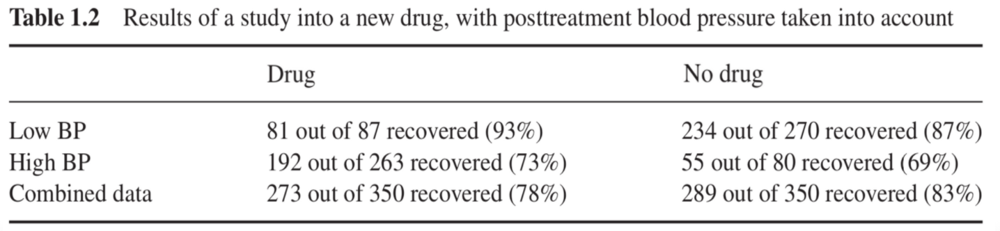
Simpsons Paradox
Statistical information alone cannot provide the answer
Two different DAGs can produce the exact same statistical dependencies in the observational setting
- Observationally equivalent
These DAGs imply different intervention effects, and different ways to estimate those effects from observational data!
0.4
0.4
Selection Bias
Berksons Paradox
Classic example: We are interested in the relationship between Lung Cancer (\(L\)) and Diabetes (\(D\))
General population, these two variables are independent.
In a sample of hospital patients, there is a negative dependency - patients who don’t have diabetes are more likely to have lung cancer.
Selection Bias
Lung cancer \(L\) and diabetes \(D\) cause hospitalization \(H\)
By taking participants from a hospital we condition on hospitalization (\(H = 1\))
If you are hospitalised, and you don’t have diabetes, probably you do have lung cancer (Otherwise - why would you be in hospital?).
\(P(D| L = 1, H = 1) \neq P(D|L = 1) \neq P(D | do(L) = 1)\)
We have conditioned on a collider
Collider Bias
Collider Bias
Randomized Control Trials
0.7 If we have observational data, we need to know something about the DAG in order to estimate a causal effect
RCTs are extremely powerful because randomization ensures no confounding
- There can’t be any backdoor paths if everyone has an equal probability of being treated or not
Previous example: If drug-taking is randomly assigned, we don’t need to account for Sex
But RCTs often not possible in many settings
0.3
Causal Inference from an SCM perspective Causal Inference is the problem of making inferences about the interventional density of our variables using the observational density
Steps (broadly):
Specify your causal target of inference (i.e. causal estimand)
Draw the DAG of your causal system. Include any observed OR unobserved variables that relate to at least two variables in your causal system
Find valid adjustment sets: what variables do you need to condition on to block backdoor paths
Decide if your causal effect is identified: Can you block all backdoor paths using only observed variables?
Estimate causal effect by conditioning appropriately* on those variables
Two Hats: Revisited
0.5 Potential Outcomes
Causal effects as Target Trial
Emulating RCT where \(X-Y\) effect is only thing of interest
View on covariates: Use only pre-treatment, throw everything into propensity score
Emphasis on estimation tools
0.5 Structural Causal Models
Causal effects as variable relationships
Intervention density
Much more detailed view of “covariates" - distinguishing multivariate systems of causal effects
Emphasis on identification
Things like mediation, direct/indirect effects can be defined more easily
Agree on most things, just a different perspective/emphasis/level of abstraction
Discussion This type of causal modeling approach allows us in theory to make causal statements from observational data
But of course, this rests on our beliefs/assumptions about the DAG being correct
We often may not be able to verify those assumptions without intervention data!
But what if we don’t know the DAG?
- Next Week: Causal Discovery